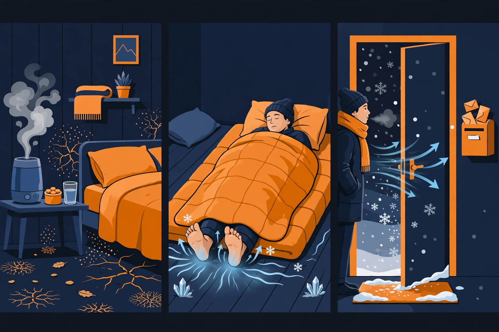

冬支度のカイカタ｜乾燥と底冷えは「場所」で潰す

- 暖房は部屋全体より「いる場所」から。足元と布団の中を温める方が、電気代は小さく済みます
- 乾燥対策は加湿器が本体。方式は性能より「手入れが続くか」で選ぶのが失敗しません
- カイロのような消耗品は、寒さが本格化する前に箱で持っておく。切らしてから買うと割高になりがちです
当てはまるかどうかをタップで答えてください。全3問に答えると、弱点のタイプと、先に見るべき対策が分かります。
Q1朝起きたとき、喉や肌のカサつきが気になる
Q2布団に入っても、足先が冷えてなかなか眠れない
Q3通勤や買い物など、外に出たときの寒さが一番つらい
1. 冬支度の仕組み（図解）

暖かい空気は水分を多く含めるため、暖房で室温を上げるほど相対的な湿度は下がります。喉の痛み・肌の乾燥・静電気は、この「乾き」のサインです。
暖かい空気は軽く天井側へ、冷たい空気は重く床側へたまります。エアコンの設定温度と足元の体感がずれるのはこのためで、布団の中も、外側が冷えると内側まで冷えたままになります。
屋外では暖房が効かず、体からは熱が逃げ続けます。ここは機械ではなく、身につける消耗品（カイロ）の担当です。
一日のうち長時間を過ごす寝床と寝室を先に潰すと、効き目が安定します。次に長くいる場所の足元、最後に外出用の消耗品、という順番がこのページの組み立てです。
※ 仕組みの説明は一般的な目安です。住まいの断熱や暖房の方式によって体感は変わります。
2. 場所・場面別の対策
3か所ごとに「なぜ効くか」と「注意点」をまとめました。具体的な商品は下記3の「選んだもの」に置いてあります。
暖房で乾いた空気は、寝ているあいだに喉と肌へ効いてきます。加湿器は「寝る部屋」に置くのが先で、日中に長くいる部屋は2台目の候補です。方式は性能の差より、手入れが続くかどうかで選ぶと失敗しません。
注意点は、加湿のしすぎと手入れ忘れです。窓が結露するほど加えると、今度はカビの原因になります。湿度計で部屋の状態を見ながら調整し、タンクの水は毎日入れ替えるのが基本です。
部屋全体の温度を上げるより、足元と布団の中を直接温める方が早く効いて、消費電力も小さく済みます。デスクや脱衣所はセラミックヒーターのような局所暖房、寝床は電気毛布、という分け方が基本形です。
注意点は低温やけどです。「熱くない」温度でも、同じ場所に長時間当て続けると起きます。電気毛布は寝る前に温めて、就寝時は弱運転かタイマーで切るのが安全です。ヒーターの前に洗濯物や布を置かないことも合わせて守ります。
外の寒さには家電が届かないので、身につける暖かさで対応します。背中や腰を温める貼るタイプが通勤の定番で、寒さが本格化する前に箱で持っておくと、切らして割高に買う失敗が減ります。
注意点は使い方です。素肌に直接貼らない、寝るときは使わない、がカイロ共通の約束です。手先を温めたい場面では、貼らないタイプをポケットに入れる使い分けもできます。
3. 選んだもの（10品）
価格は変動するので載せません。代わりに「なぜこれか」の理由を書きました。ブラックフライデー（11月19日に詳細発表）でセール対象になるかは、発表を受けてこのページで照合します。

お湯を沸かすスチーム式は、加湿が確実な方式。電気ポットと同じ構造なのでフィルターがなく、お手入れは容器を洗うだけです。タンク4.0L、加湿量は最大480ml/hで洋室13畳まで。弱運転なら約32時間連続で使えます。今季モデルは加湿音を抑えた静音設計で、寝室でも使いやすくなりました。「手入れが面倒で加湿器をやめた」人ほど向くタイプです。
スチーム式の象印と並ぶ、もう一つの選択肢がハイブリッド式。温風と気化を組み合わせる方式で、これは2025年発売の現行モデルです。タンクは4L、「どっちも給水」でタンクを外して運ぶ給水と本体へ直接注ぐ給水の両方に対応します。★4.3・レビュー127件（11月12日時点の確認）。
部屋全体ではなく、自分のまわりだけを潤す小型の卓上タイプ。加湿量は280ml/h、木造和室4畳までが目安で、タンクは4L入ります。象印やシャープが「部屋の本体」なら、こちらは寝室の枕元やデスクの相棒。★3.8・レビュー330件（11月12日時点の確認）。

掛けても敷いても使える大判タイプの定番モデル。本体は丸洗いできて、ダニ対策機能と温度調節つき。エアコンで部屋全体を温めるより、布団の中だけを温める方が消費電力は小さく済む——冬の節電の基本形です。
電気毛布のもう一つの選択肢は、フランネル素材のこちら。掛け・敷き兼用で180×130cm、温度は無段階調整なので「ちょうどいい温かさ」に細かく合わせられます。山善が大判・丸洗いの定番なら、こちらは肌触りと調整幅で選ぶ一枚。★4.0・レビュー960件（11月12日時点の確認）。
脱衣所・洗面所・デスクの足元に置く「局所暖房」専用。スイッチを入れてすぐ温風が出るのがセラミック式の強みで、最大1200Wの3段階切り替えと人感センサーつき。人の動きを検知して自動でON/OFFするので、短時間の暖房に向きます。幅24cm・奥行11cmのスリムな形で、置き場所も取りません。
底冷えの犯人の一つは、窓から流れ込む冷気です。このシートは窓ガラスに水で貼るだけ。幅90cm×長さ1.8mが2枚入りで、大きな窓にも回ります。暖房器具を増やす前に冷気の入口を塞ぐ、電気代のかからない対策。★3.9・レビュー972件（11月12日時点の確認）。

衣類に貼るタイプで、温かさは14時間持続。売れ筋ランキングで★4.5・1,500件超のレビューがつく定番です（11月11日時点の表示）。1個ずつ買うと割高になる消耗品こそ、30個の箱で先に持つのが効きます。
桐灰が「貼る」なら、こちらは「貼らない」タイプ。ポケットに入れておけば、出先で手先が冷えたときにそのまま握れます。貼るタイプは背中や腰、貼らないタイプは手先——と、温めたい場所で使い分けるのが正解。★4.4・レビュー1,819件（11月12日時点の確認）。
貼るタイプの「まとめ買いの定番」。レビュー8,073件はこの分野で最も多い部類で、長く売れ続けている実績で選びます（★4.4、11月12日時点の確認）。持続時間で選ぶ桐灰に対して、家族で毎日使う消耗品を箱で常備するなら、こちらが受け皿になります。
4. 買い方・買い時の手順
乾燥か、底冷えか、外出か。当てはまる場所から先に潰します。
加湿器か電気毛布か。型番まで決めておくと、セールで迷いません。
カイロなどは寒さのピーク前に。ピーク中は在庫も単価も荒れます。
11月19日のブラックフライデー発表で、このページの10点が対象か確認します。
5. 切り分け表：困りごと→対策
| 困りごと | 起きていること | 対策の本体 |
|---|---|---|
| 朝起きると喉が痛い | 寝室が乾燥している | 加湿器を寝る部屋に置く（上記3の象印 スチーム式加湿器） |
| 部屋は暖房中なのに足が冷たい | 冷気は足元にたまる | 足元だけの局所暖房（上記3のアイリスオーヤマ セラミックヒーター） |
| 布団に入っても寝つけない | 寝床そのものが冷えている | 電気毛布で寝床を先に温める（上記3の山善 電気毛布） |
| 脱衣所・洗面所が寒い | 短時間の場所に暖房が届いていない | 人感センサー付きの局所暖房（上記3のアイリスオーヤマ セラミックヒーター） |
| 通勤・外仕事で体が冷える | 外では暖房が効かない | 貼るカイロを箱で備える（上記3の桐灰カイロ はる） |
| 静電気がひどい | 乾燥が進んでいるサイン | まず加湿。化繊の重ね着を減らすのも手です |
| 暖房費がかさむ | 部屋全体を温め続けている | 「いる場所だけ」暖房に寄せる（上記2の組み立て） |
※ 対応は目安です。置き場所や使い方の注意は、上記2の各カードも合わせて確認してください。
6. 冬支度チェックリスト
加湿器や電気毛布など、買い替え・買い足しが要る本体は、寒くなる前に型番まで決めます。セールの発表後は、その型番が対象かどうかを照合するだけになります。
加湿器・ヒーター・電気毛布は、本番前に一度動かして確かめます。加湿器の水回りの掃除も、このタイミングで済ませます。家全体の掃除の割り振りは、年末大掃除の進め方も参考にしてください。
電気毛布の敷き方とタイマーの動き、毛布の枚数を確認します。寒さの本番は睡眠に直結するので、順番では寝床が先です。
カイロのような消耗品は、寒さが本格化する前に箱で用意します。ピークに入ってからだと、在庫も単価も荒れます。
ヒーターの周りに燃えるものがないか、カイロの使い方（素肌に貼らない・就寝時は使わない）を家族で共有します。
※ 順番は「寒さが本格化する前」という区切りで並べた目安です。地域の寒さに合わせて前倒ししてください。
7. よくある質問
Q. 加湿器の方式はどれがいいですか？
Q. 電気毛布とエアコン、どっちが安いですか？
Q. カイロは「貼る」と「貼らない」のどっちがいいですか？
Q. 加湿器は寝室とリビング、どちらに置くべきですか？
Q. 電気毛布で低温やけどをしないか心配です。
関連する特集
Amazonのセールは、仕組みと順番を知らないと損をする。その「歩き方」を特集で案内しています。日々の値動きは価格の流れを確認してから、本当に安いものだけをXで速報しています。
Xで速報を受け取る（@A_KAIKATA）Amazonのアソシエイトとして、カイカタは適格販売により収入を得ています。
このサイトについて｜プライバシーポリシー